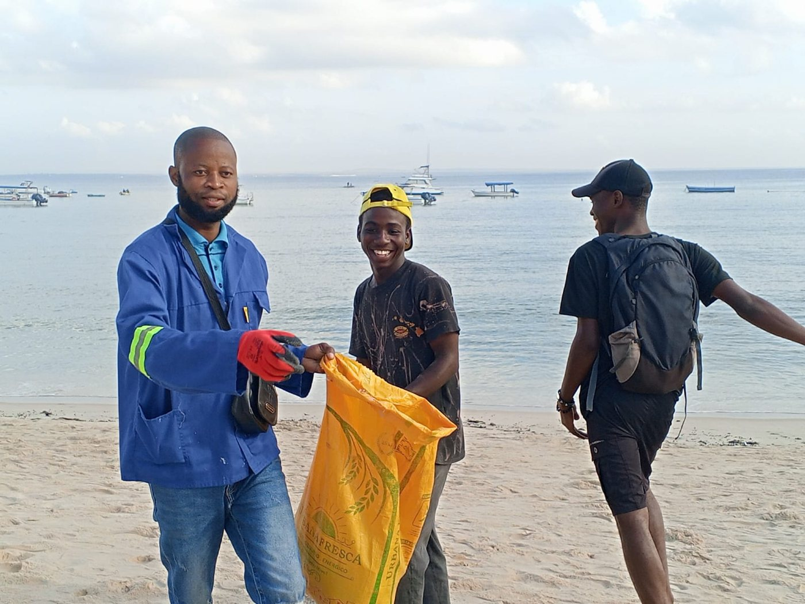
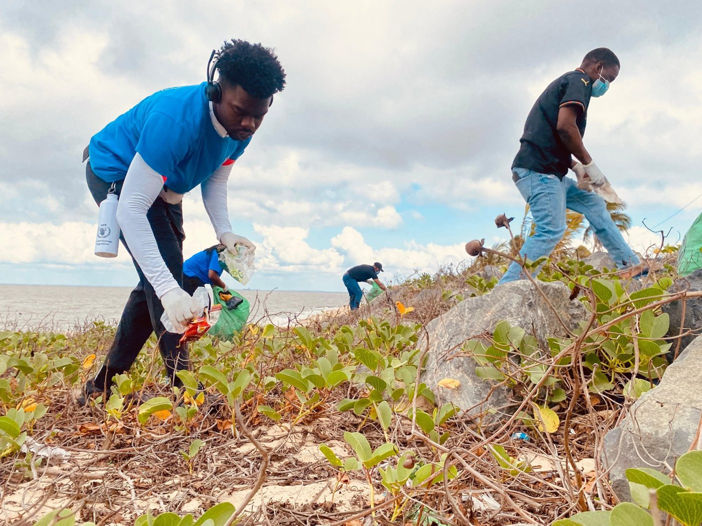

Galeria
Momentos da nossa comunidade.
Fotografias das atividades de voluntariado, formação e ação comunitária da YHPN.





Quer aparecer nesta galeria?
Participe nas nossas atividades e partilhe connosco os seus momentos.